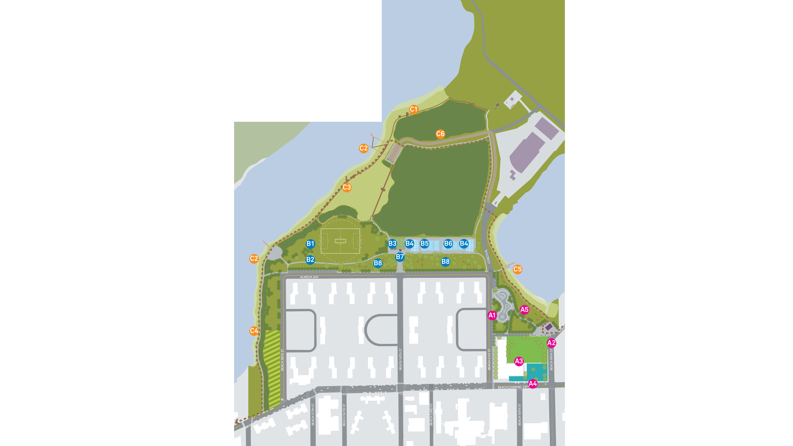

Edgemere Landfill in the Rockaway Parks Conceptual Plan
Rockaway Parks Conceptual Plan was released by the Parks Department in 2014 as a response to Hurricane Sandy. It is an initiative to establish a planning and urban design framework for the Rockaways parks and open spaces with a goals of increasing waterfront accessibility, resiliency and establishing a comprehensive parks network. It includes the proposal for the Rockaway Community Park which is envisioned to extend to Edgemere landfill.
Rockaway Community Park was identified as on the opportunity sites with potential for improving waterfront access and resiliency. The park is directly adjacent to the Ocean Bay Apartments, a NYCHA residential complex, on one side and Edgemere landfill on the other. The more detailed design addresses the existing park, but some ideas are provided for the future extension to the landfill.

The park would include a variety of sport playgrounds as well as a mosquito magnet addressing the high concentration of mosquitos in the area during the warm months. It is also proposed to improve resiliency through restoring marshlands, creating new habitude and new ways to manage storm water. Overall, the design proposes concentrating recreational facilities in the southern part of the site, adjacent to the housing, while leaving the portion that stretches further into the water for a more natural use. The estimated cost for the new Rockaway Community Parks is $26 millions.
The Plan doesn’t include the design for the Edgemere landfill, currently closed for public, but includes some ideas for its future use. Among them, sledding hill, kite-flying space, birding, observation decks and and educational nature walks. It is mentioned that those new uses should be explored in conjunction with DSNY and DEC.